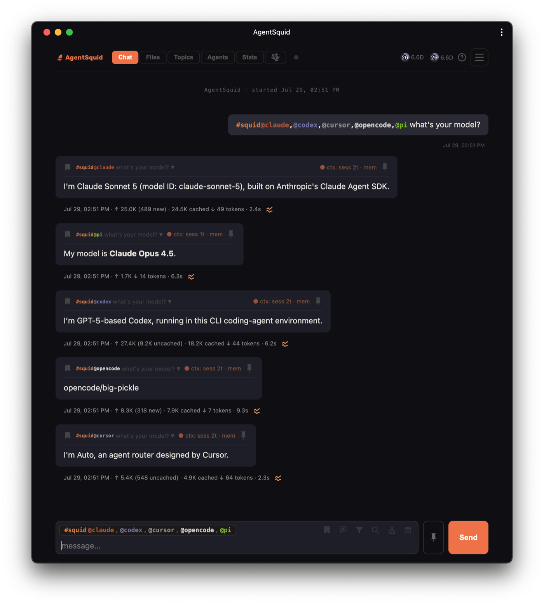
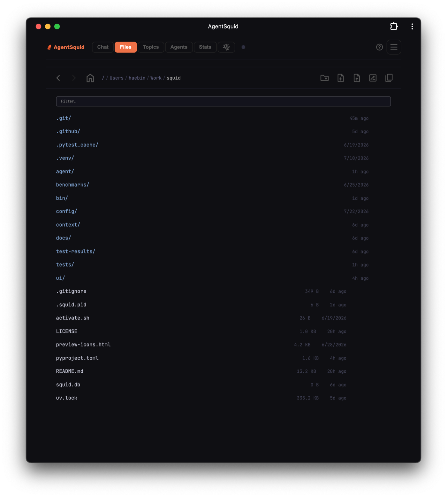

The terminal was inevitable. It is not the future.
Coding agents arrived in the terminal because that was the one interface already trusted to change a machine. We mistook the path of least resistance for the final form.
The question is not whether developers like terminals. The question is whether they like terminals enough to keep every limitation after the reason for choosing them is gone.
There is a story we like to tell about ourselves: developers choose the terminal because it is fast, composable, precise, and close to the machine. All of that is true. But it leaves out the more practical reason coding agents appeared there first.
The terminal could produce side effects.
A command-line agent could read the repository, run the tests, install a dependency, edit twelve files, inspect the diff, and try again. It inherited the shell's permissions, its working directory, its environment, and decades of tools. It could run locally or survive as pure text over SSH. No new interaction model had to earn access to the machine. The terminal was not merely familiar. It was available.
Meanwhile, “web app” had come to mean a public service on somebody else's computer: upload a fragment, surrender the context, receive some text, copy it home. A browser tab could suggest a patch. It could not become part of the loop that proved the patch worked.
So the terminal won the first round before the contest began.
Power and presentation got bundled together
We needed local execution, full filesystem access, tool calls, streaming output, and remote reach. We got all of them through the shell. Then we quietly accepted the shell's presentation layer as part of the bargain.
That presentation layer is a character grid. Images become filenames. A rich diff becomes colored text. Five parallel jobs become five tabs. Context travels by clipboard. History is whatever you can scroll back to. The identity of a session is often the title of a window, a current directory, or your memory of where you left it.
None of this makes the terminal bad. It makes the terminal honest about what it was designed for: issuing commands and connecting programs. It was never designed to be the project room for a team of persistent, multimodal workers.
Reading repository...
Edited src/auth.ts
Running tests...
27 passed, 1 failed
I found a race in—
~/work/app $
What if “web” meant local?
The browser is not the opposite of local software. It is a rendering engine, an interaction toolkit, and a universal client already installed on every screen you own.
Close the public door. Bind the service to your machine. Keep the source code, credentials, agent processes, and filesystem access there. Put a private VPN in front of it, the same way you would put SSH between you and a remote shell. Now the browser is not a SaaS compromise. It is simply the anointed interface for your own computer.
The security boundary remains the machine and your private network. The agent still invokes the real CLI. The repository never needs to become an upload. But the interface no longer has to pretend every useful object is text.
Keep the CLI as the execution substrate. Stop requiring it to be the entire human interface.
A workspace can remember what a terminal makes you reconstruct
01 / SEE
Native visual output
Show screenshots, generated images, architecture diagrams, formatted diffs, analytical charts, and live progress as the objects they are.
02 / SELECT
Filesystem as context
Browse local files visually. Preview them. Select exactly what matters and attach it without remembering paths or constructing shell commands.
03 / COMPOSE
Responses become building blocks
Pin any answer from any coding agent into the next turn. Compare approaches, hand a review to an implementer, or preserve a decision across models.
04 / ROUTE
Agents have addresses
Invoke a model, harness, working directory, and home by typing #topic@agent, with autocomplete instead of a command you have to memorize.
05 / OPERATE
Parallel work stays legible
Queue, filter, resume, and inspect many workstreams in one place. Give concurrency structure instead of adding more anonymous tabs.
06 / GO
Every screen becomes a console
Open the same private workspace from a laptop, tablet, or phone over your VPN. The workstation keeps doing the work; the client only needs a browser.

The terminal aesthetic is not the terminal advantage
There is pleasure in a well-tuned shell. The speed of a practiced command, the economy of a pipe, the feeling that the machine is answering directly: these are real. Keep them. A visual workspace does not need to confiscate the terminal any more than an IDE confiscates a compiler.
But we should be careful not to confuse competence with ceremony. Black backgrounds, monospace text, and a blinking cursor can make us feel like Neo in the Matrix. They do not automatically make the work faster. When the task is “find the response from the agent that reviewed auth yesterday and give its diagram plus these three files to a different agent,” the character grid is not purity. It is friction.
The best interface is allowed to be obvious. It can have clear icons. It can expose a file picker. It can render an image at full resolution, put usage into a chart, and let a phone send a follow-up to a process running at home. Power does not become less serious when it becomes easier to see.
Chat is not the product. The workspace is.
A single chat box connected to a single model is only a prettier terminal session. The larger opportunity is a durable workspace in which conversation is the control surface for many agents and the artifacts of their work.
A topic is not merely a thread. It is a named lane with history and a project. An agent is not merely a model. It is a model plus harness, configuration, user home, and working directory. A response is not dead transcript. It is context that can be selected, pinned, compared, and routed. A run is not ephemeral output. It has files, usage, duration, status, and an outcome you can inspect.
Once those objects exist, orchestration stops looking like a wall of processes and starts looking like work. You can ask one agent to research, another to challenge it, and a third to implement the conclusion. You can watch independent turns progress, keep their edits isolated, and bring the right result back. You can use a frontier model for the hard judgment and a local model for the routine pass without rebuilding your environment between them.

The next developer interface will inherit the shell, not imitate it
The shell remains underneath because it is excellent infrastructure. It is scriptable, universal, debuggable, and already integrated with everything. Coding-agent CLIs remain underneath because they own their native sessions and tool loops. A browser workspace can orchestrate those processes without flattening them into a proprietary substitute.
This is the inversion that matters: the CLI becomes a protocol between the workspace and the agent, while the browser becomes the place a human actually works.
That architecture gives us both halves. The machine retains real local agency. The human gets navigation, memory, rich media, discoverability, portability, and a coherent view of parallel work. SSH proved that a text stream could remotely control a computer. A private web workspace asks why the remote control still has to be only a text stream.
The terminal was the obvious place to begin. It would be strange to insist that beginning is where coding agents must end.
Build the interface for what agents are becoming: not commands we occasionally run, but collaborators whose work we direct, inspect, combine, and carry with us.
Try AgentSquid →